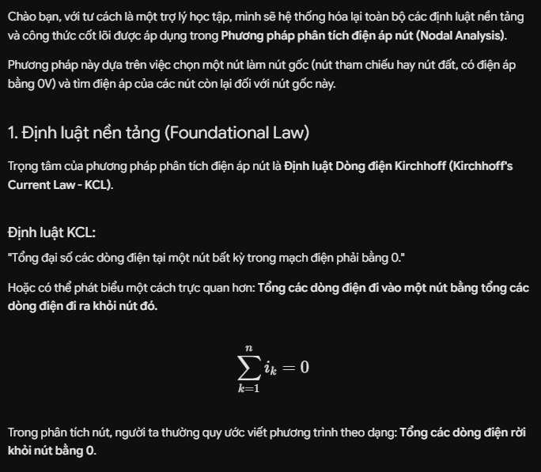
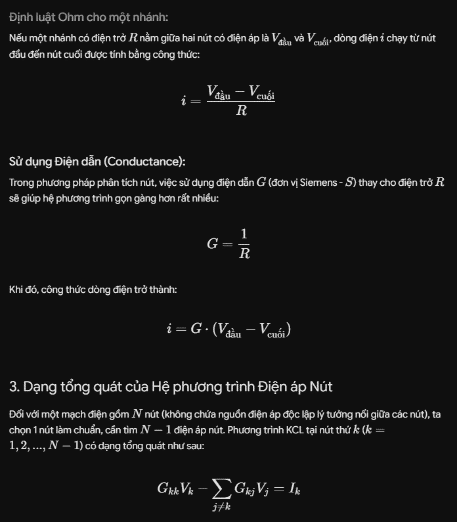
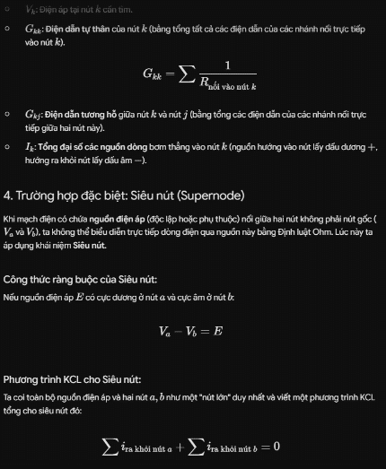
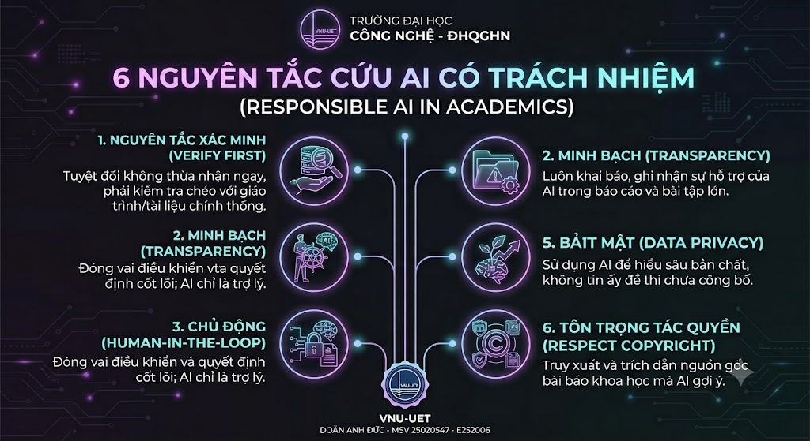

I. Mục tiêu thực hành
Phát triển kỹ năng khai thác trí tuệ nhân tạo có trách nhiệm, tuân thủ nghiêm ngặt chuẩn mực đạo đức học thuật. Nghiên cứu sâu sắc các định hướng, chính sách hiện hành của Đại học Quốc gia Hà Nội (ĐHQGHN) để thiết lập ranh giới minh bạch giữa hỗ trợ công nghệ hợp lý và gian lận học vụ.
II. Chính sách công nghệ tại ĐHQGHN
- Khuyến khích đổi mới sáng tạo: Nhà trường ủng hộ và định hướng sinh viên sử dụng các mô hình ngôn ngữ lớn (LLMs) như một trợ lý học tập độc lập để gợi mở ý tưởng, tra cứu tài liệu học thuật và tối ưu hóa quy trình tư duy.
- Nghiêm cấm gian lận học thuật: Mọi hành vi sao chép nguyên bản phản hồi của máy (AI) để nộp làm bài tập lớn, bài thi hoặc sử dụng dữ liệu đồ họa, mã nguồn do AI tạo ra mà không thực hiện quy trình trích dẫn minh bạch đều bị coi là vi phạm liêm chính học thuật.
III. Nhật ký thực hiện nhiệm vụ học tập học phần ECE2056
Nhiệm vụ: Tổng hợp cấu trúc lý thuyết cốt lõi về phương pháp phân tích điện áp nút (Nodal Analysis) cho môn Kỹ thuật điện.
1. Cú pháp Prompt ứng dụng:
2. Quy trình rà soát & Hiệu đính: Tôi đã tiến hành đối chiếu toàn bộ hệ thống định luật Kirchhoff về dòng điện (KCL) do AI phản hồi với giáo trình gốc, kiểm tra chéo các dấu đại số và điều chỉnh lại ký hiệu chiều dòng điện cho chính xác với quy ước bài giảng trên lớp.



3. Trích dẫn minh bạch: Tài liệu tham khảo cuối bài luận được ghi rõ: "Hệ thống danh mục công thức được rà soát và hỗ trợ phân loại ban đầu bởi mô hình ngôn ngữ lớn ChatGPT (OpenAI) vào ngày 08/06/2026."
IV. Phân tích khía cạnh đạo đức học thuật
Việc lạm dụng AI tạo sinh không qua bộ lọc tư duy phản biện sẽ dẫn đến sự suy giảm nghiêm trọng về năng lực tự giải quyết vấn đề của sinh viên. Ranh giới giữa hỗ trợ và gian lận nằm ở quyền chủ động: Dùng AI để hiểu sâu bản chất bài toán là khoa học; để AI làm thay và biến sản phẩm của thuật toán thành của mình là đạo văn.
V. Bộ 6 nguyên tắc cốt lõi của cá nhân
Luôn kiểm tra chéo các kết quả toán học, ma trận, hoặc đoạn mã do AI xuất ra với giáo trình và tài liệu chính thống.
Khai báo rõ ràng sự hỗ trợ của công cụ AI trong mọi báo cáo bài tập lớn nếu có sử dụng để định hình khung nội dung.
Đóng vai trò điều khiển và đưa ra quyết định cốt lõi; AI chỉ dừng lại ở mức độ trợ lý bổ trợ thông tin.
Khai thác AI để hiểu sâu bản chất dòng điện, cấu trúc giải thuật thay vì lấy đáp án đối phó tiến độ học vụ.
Tuyệt đối không tải lên các mô hình AI công cộng các tài liệu kiểm tra nội bộ chưa công bố hoặc thông tin bảo mật.
Truy xuất và thực hiện trích dẫn nguồn gốc của bài báo khoa học gốc do AI gợi ý thay vì trích dẫn gián tiếp qua AI.
VI. Infographic minh họa bộ nguyên tắc cá nhân
Sản phẩm thiết kế trực quan hóa 6 nguyên tắc sử dụng AI có trách nhiệm bám sát nhận diện học hiệu VNU-UET:

VII. Kết luận
Sử dụng AI có trách nhiệm là chìa khóa vàng để sinh viên làm chủ công nghệ và phát triển bền vững. Tuân thủ đạo đức học thuật giúp xây dựng nền tảng tri thức cá nhân trung thực, tạo bệ phóng vững chắc cho hành trình trở thành một kỹ sư chuyên nghiệp trong tương lai.